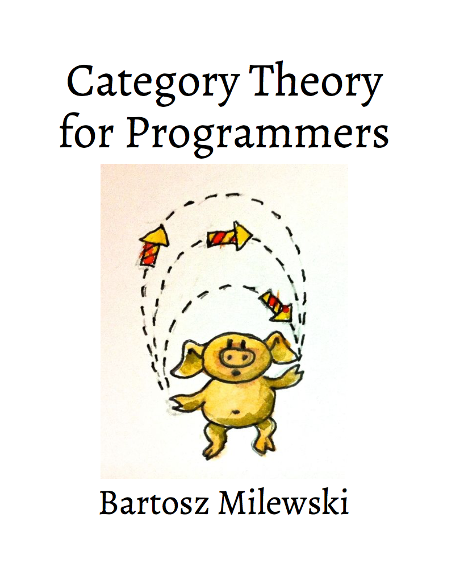

Notes: Category Theory for Programmers by Bartosz Milewski
Posted on December 15, 2017
by jcb

# Contents
- Completed
- In Progress
- Planned
Part I:
- Chapter 1: Category
- Chapter 2: Types and Functions
- Chapter 3: Categories Great and Small
- Chapter 4: Kleisli Categories
- Chapter 5: Products and Coproducts
- Chapter 6: Simple Algebraic Data Types
- Chapter 7: Functors
- Chapter 8: Functoriality
- Chapter 9: Function Types
- Chapter 10: Natural Transformations
Part II:
- Chapter 11: Declarative Programming
- Chapter 12: Limits and Colimits
- Chapter 13: Free Monoids
- Chapter 14: Representable Functors
- Chapter 15: The Yoneda Lemma
- Chapter 16: Yoneda Embedding
Part III:
- Chapter 17: It’s All About morphisms
- Chapter 18: Adjunctions
- Chapter 19: Free/Forgetful Adjunctions
- Chapter 20: Monads: Programmer’s definition
- Chapter 21: Monads and Effects
- Chapter 22: Monads Categorically
- Chapter 23: Comonads
- Chapter 24: F-Algebras
- Chapter 25: Algebras for Comonads
- Chapter 26: Ends and Coends
- Chapter 27: Kan newExtensions
- Chapter 28: Enriched Categories
- Chapter 29: Topoi
- Chapter 30: Lawvere Theories